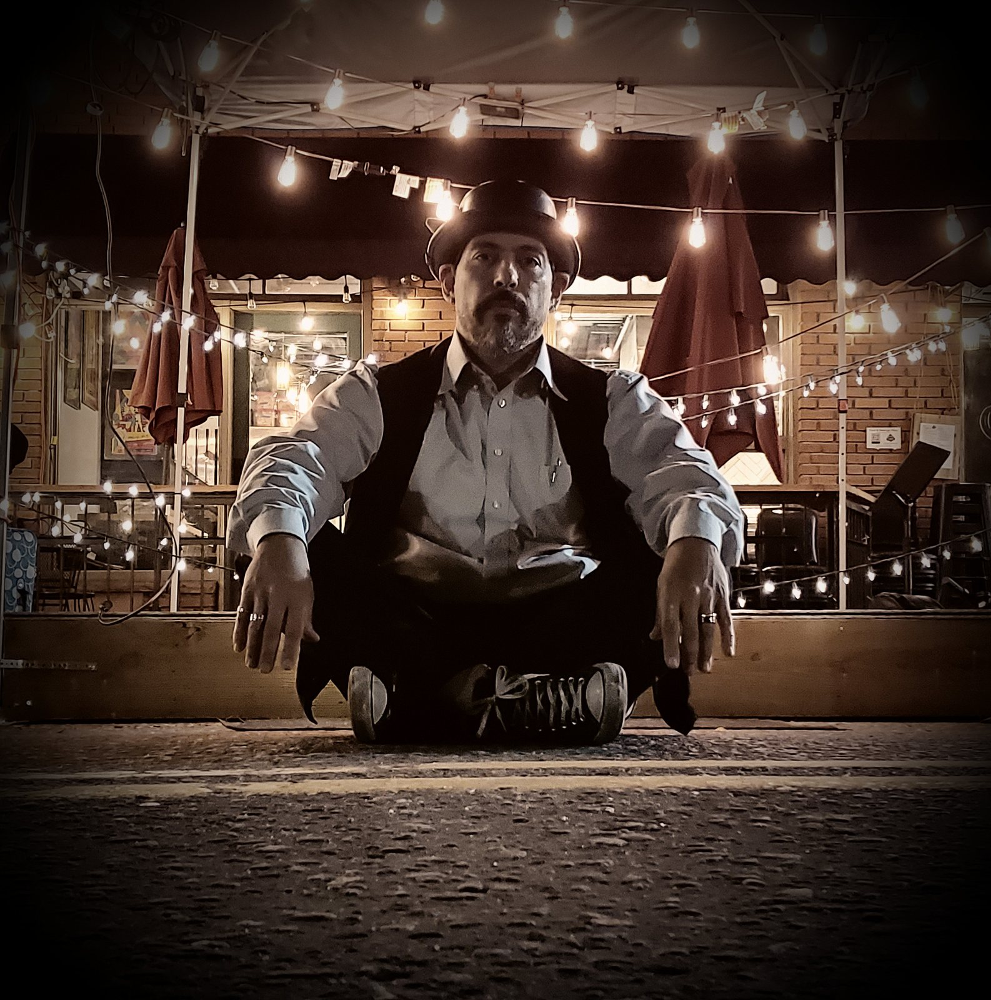

Corporate retreats
Beaver Creek corporate retreats, in the village or up the mountain.
A Beaver Creek evening has a particular quality: the village is quiet, the snow is falling on the plaza outside, and inside there’s music and a group of colleagues who have stopped checking their email. It’s the night the whole offsite gets remembered for.
Beaver Creek's event calendar is split in two: hotels on a terraced, pedestrian village where escalators do the climbing, and venues up the mountain that gear reaches over snow in winter. Which half your evening books into decides the load-in, and we settle that with the venue before the day.
The music itself is the usual retreat plan: a welcome night, dinner at conversation volume and a closing night with a dance floor, and solo through quartet covers all of it on one contract. Every resort town we work starts from the corporate retreats page.
The evening activities themselves, including the off-site dinner up the mountain this valley is known for, are set out in corporate retreat evening ideas in Vail.
The look
The village evening.
An outdoor stage under cover, and a patio set at conversation volume.


The venues
The village venues and the mountain venues.
The village half is the hotel calendar. The Park Hyatt Beaver Creek sits on the plaza at the center of the village, The Pines Lodge holds the smaller, higher end of it a short climb above the core, and The Ritz-Carlton Bachelor Gulch runs the same program from its own enclave, with its own approach road and its own dock. Ballroom awards nights and twenty-seat dinners both happen here.
The mountain half is what makes this market different from the other resort towns. Beano's Cabin sits on the mountain itself and Saddle Ridge at the upper edge of the village, and an evening at either one is the night the group plans the whole trip around: dinner first, then live music in a venue the guests themselves had to ride to.
Where one act should carry the whole evening, Tejas Singh can start as a duo at dinner and become the quartet on the dance floor, on one contract for the whole night. Where the dinner is the whole event, a jazz duo holds it with conversation sitting comfortably on top.
Load-in up the mountain and in the village.
Some Beaver Creek venues are reached over snow for half the year, and gear travels the way the venue says it travels: by sleigh, snowcat or gondola in winter, by vehicle in summer. Which of those it is, when the route runs, and where cases wait through dinner are questions we put to the venue in writing before the day. The answers decide what we bring and when it moves.
The village has its own load-in question. The core is pedestrian and terraced, escalators carry guests between the parking structures and the plaza, and gear takes the dock and the service route instead, on a window the hotel schedules. We measure the distance from the dock to the floor and plan for it in advance.
Power is one or two dedicated 20-amp circuits depending on the size of the band, and the footprint runs from 6 by 4 feet for a solo to 14 by 10 for a quartet, all set out by size. The village sits near 8,100 feet, so we plan a longer sound check, with a retune between sets. Beaver Creek's own noise cap is one we haven't confirmed, and our mountain corridor page says so: send us the venue and we'll get the number in writing.
details and costs
What a Beaver Creek date adds.
The mountain drive is one, and the other is which half of the resort your evening books into.
Travel is its own line on the quote, covering the I-70 drive from Denver and the hours around it, and it’s the same line whether the evening is a welcome night or a closing party.
The second variable is the venue. A plaza hotel with an escalator to the ballroom and a venue up the mountain that gear reaches over snow are different days of work, and we settle which one it is with the venue before the date.
A holiday weekend prices above a standard date across this market, and the strong dates at Beaver Creek are decided early. The wider Colorado market is in the cost guide. Tell us the date and which venue your evening books into, and we’ll come back with a recommendation and a price.
Private celebrations book the same way.
Milestone birthdays, anniversaries and family gatherings use the same venues and the same single contract, with the certificate of insurance alongside it. The wider set of occasions is on the private parties page.
Groups splitting the trip between resorts can book one plan that covers both: Vail, the next resort along I-70, runs on docks and freight elevators rather than snow routes, and its page covers that.
Beaver Creek
Beaver Creek booking questions.
- How does gear reach Beano's Cabin or another on-mountain venue?
- The way the venue runs its access: by sleigh, snowcat or gondola in winter, by vehicle in summer. We settle the route, the schedule and where cases wait with the venue in writing before the day, because those answers decide what gear we bring and when it travels.
- How does load-in work in the village core?
- By dock and service route, on a window the hotel schedules. The village core is pedestrian and terraced, and the escalators are for guests, so we plan the dock time and the distance to the floor with the venue in advance. Load-in runs 45 to 90 minutes depending on the size of the band.
- What is the travel line for Beaver Creek?
- Travel is its own line on the quote, covering the I-70 drive from Denver, so the cost of reaching the village is visible before you commit. A late curfew or a venue up the mountain can add a night's lodging, billed at cost as its own line.
- Is there a published noise cap in Beaver Creek?
- We haven't confirmed one, and our mountain corridor page says so. Each venue sets its own event rules, so send us the venue name and we'll get the number in writing before the contract. For scale, dinner sets run 65 to 72 dBA at the nearest table.
- What size fits a retreat dinner here?
- A duo or a trio at conversation volume carries dinner, and the quartet is the closing-night booking when filling a dance floor is the objective. A multi-evening trip can be booked on one contract.
Send us the Beaver Creek dates and we'll sort the load-in with the venue.
Live music for your event, from a solo musician to a full band, with sound support that’s the right size for the venue and a personal contact for the night.
Send us the date and the venue, and we’ll come back with a recommendation and a price for your night. What live music costs in this market is on the pricing page.